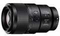

器材库 > 35mm画幅AF定焦镜头 > FE 90/2.8 Macro G OSS

详细规格
镜头类型
微距镜头
发布日期
2015-03-04
焦距
90mm
等效35mm画幅焦距
135mm
最大光圈
f/2.8
最小光圈
f/22
镜头结构
15片/11组
非球面镜片
1片
低/超低色散镜片
2片
光圈叶片
9片
最近对焦距离
28cm
最大放大倍率
1倍
滤镜口径
62mm
镜头卡口
Contax G, Sony E
防抖
是
颜色
黑色
尺寸
约79 x 130.5mm
重量
约602g
matthewzhao2015-06-26 00:194.83 分
操作性 5.00耐用性 5.00性价比 4.50解像力 5.00色彩还原 5.00机械结构 4.50
产品图 / 样片
评测 / 相关文章
相关文章
- ［试用］索尼全幅镜头新骄傲 FE 90/2.8评测 （存档）
- ［试用］索尼FE90/2.8 Macro G OSS评测样张 （存档）
- ［资讯］小身材也有大能量 索尼微单选购全攻略 （原站已下线）
- ［试用］索尼全幅镜头新骄傲 FE 90/2.8评测 （原站已下线）
- ［试用］索尼FE90/2.8 Macro G OSS评测样张 （原站已下线）